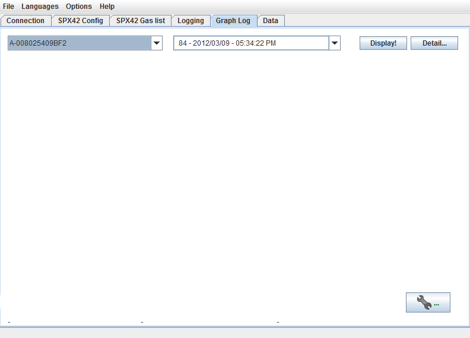
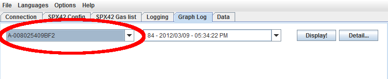
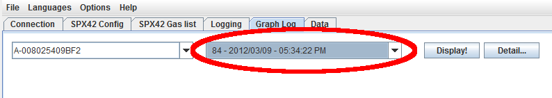
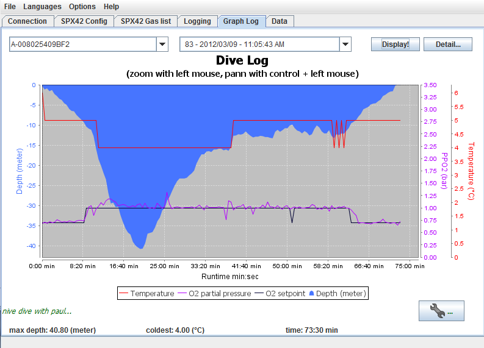
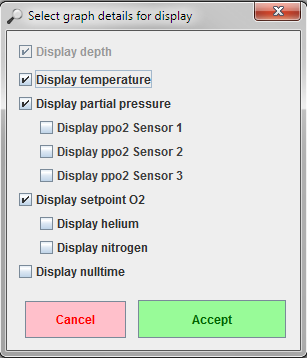
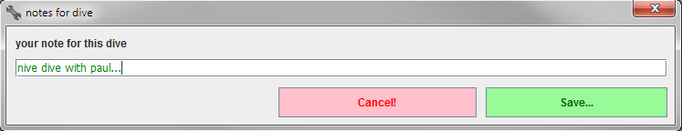
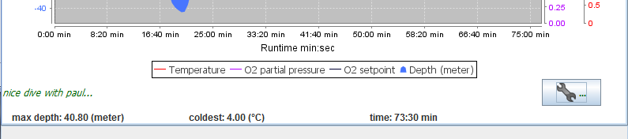

Overview
The tab 'Graph log' allows a quick graphical display of the dive profiles saved
in the internal database. Furthermore a note can be saved to the database
alongside every profile which will be exported alongside the profile.

Overview tab graphical display
Displaying the data is done using an Open Source library called
"JFreeChart" www.jfree.org
which is published under the GNU Lesser General Public Licence.
(See Libraries and Licenses)
Contents
Select device for display
First the selection of the device with the corresponding log files is
necessary. In case more than one device is available in the data base the
default setting will be the currently connected device. In case no device is
currently connected, the default setting will be the alphanumerical first
entry of the database.

Select device with desired log files
Contents
Selection of dive/profile
Once a device has been selected the list will be filled with the device's
available logs (dives/profiles). The desired entry can be selected from the
drop-down list.

Selecting log/profil
Contents
Displaying of Data
To display the dive's graphical respresentation, simply click the 'Display!'
button and you show the following:

Displaying log/profile
Zooming on the time axis can be done using the mouse wheel or the left mouse
button by selecting the desired portion of the window with the left mouse
button being held. It is possible to move the zoomed region left and right by
holding the CTRL-key (Control key) and moving the mouse left and right.
Zooming on the depth/pressure/temperature axis is not supported.
Contents
Details of display
To display or hide the log data's details simply click the 'Detail...' button.
A dialog window will pop up allowing to en-/disable certain details.

En-/disable details
After display options have been en-/disabled by clicking the
check boxes, they can be applied by clicking the 'Accept' button..
Contents
Notes to dive/profile
For every dive/profile a short text can be saved alongside to the database.
Simply clicking the wrench button will cause a window to pop up which allows
you to enter that note.

Edit dive's note
Clicking the 'Save' button will save the note to the database. This note will
be exported alongside the file and will be displayed during graphical display.

Dive note
Contents